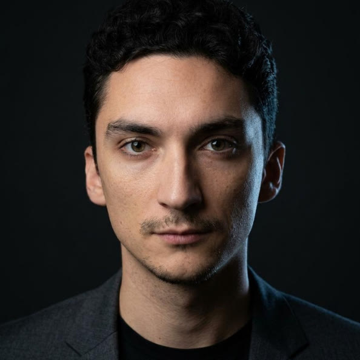
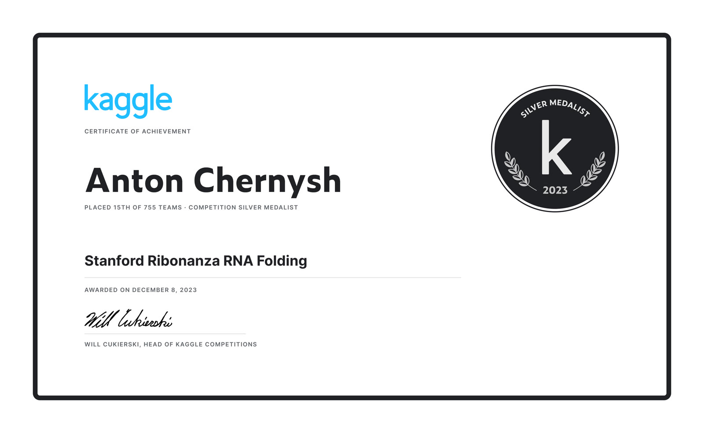
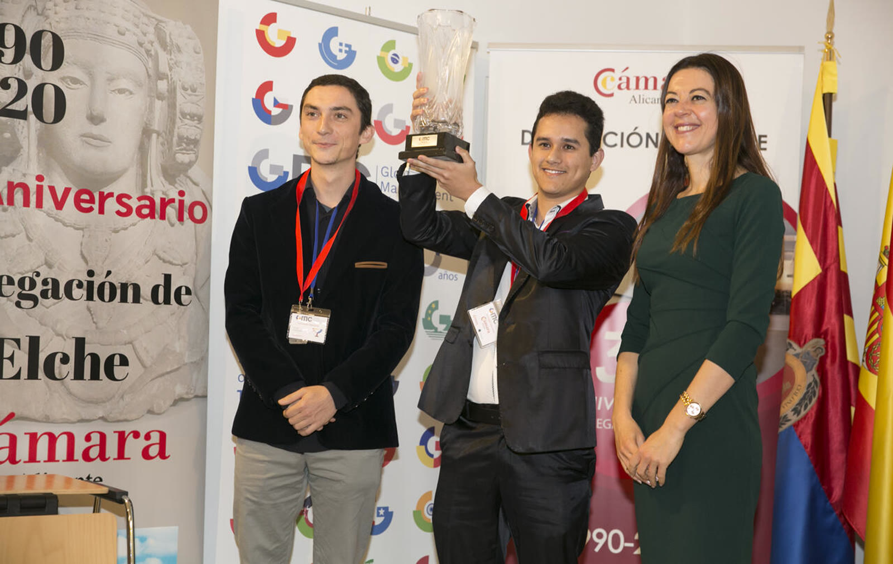
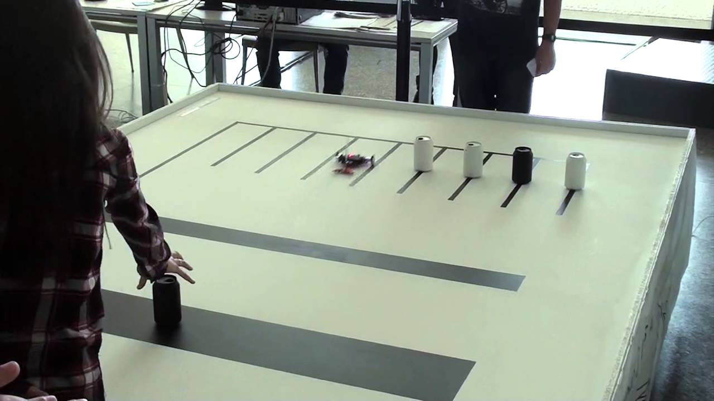
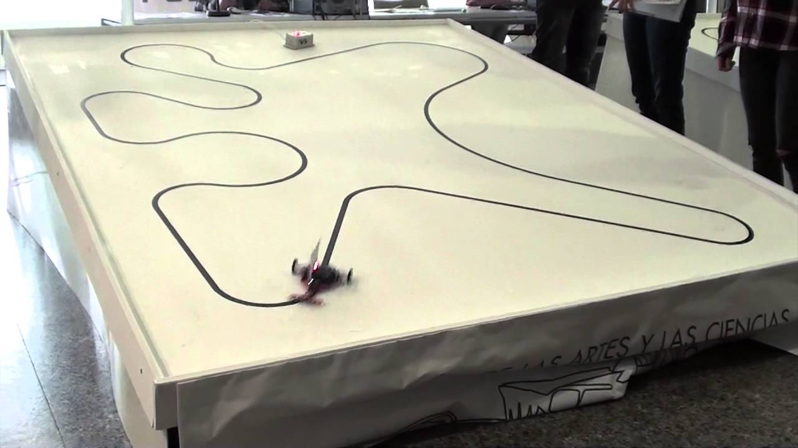

Protein with Rust
Analysing a protein with no server in the loop. Learned: Rust compiled to WebAssembly, live UniProt and Ensembl lookups, and drawing 3D structures in a browser.
Last commit 20 Sep 2026Write-up →

Site Reliability Engineer · Zurich, Switzerland
I keep production systems measurable, and then keep them that way. At DFINITY I build and scale caffeine.ai, an AI-driven platform for building and deploying full-stack applications in the cloud, and I run the reliability practice around it: SLOs, error budgets, incident response and postmortems.
Before that I looked after regulated financial infrastructure at Taurus — Terraform, Kubernetes and 24/7 on-call — and at Webbeds I refactored core services from PHP to Go for 6 billion requests a day at four times the throughput. I write Go, Python and Rust, and I prefer problems where the answer has to be measured rather than argued about. “If you cannot measure it, you cannot improve it.”
Analysing a protein with no server in the loop. Learned: Rust compiled to WebAssembly, live UniProt and Ensembl lookups, and drawing 3D structures in a browser.
Last commit 20 Sep 2026Write-up →

A complete rules engine for two-player chess. Learned: check detection, legal-move filtering, castling and en-passant edge cases, and wiring a vanilla-JavaScript board to a Go backend over WebSockets.
Last commit 3 Sep 2021Repo →

Seeing how search algorithms actually explore a grid. Learned: A*, backtracking, branch and bound, and randomised BFS and DFS, each written from scratch and animated on a canvas.
Last commit 17 Sep 2021Repo →
Streaming live market data over WebSockets in Go. Learned: goroutines, channels, reconnect handling, and why a spread is gone by the time three trades settle.
Last commit 8 Sep 2021Repo →

Forecasting retail sales from two years of order data. Learned: feature engineering on messy data, regression with scikit-learn, and scoring with a metric that punishes stock-outs more than error.
Last commit 21 Aug 2021Repo →

A playable game for the Amstrad CPC. Learned: Z80 assembly, sprites and tile maps, a fixed-timestep loop, and counting bytes on a 4 MHz machine.
Last commit 3 Nov 2020Repo →

A neural network with nothing underneath it. Learned: forward and backward passes, gradient descent, and how an Atari agent's reward loop really works.
Last commit 23 Jan 2021Repo →
Reliability, platform and software engineering across Switzerland, Spain and Luxembourg — from AI platforms and regulated finance to travel traffic at billions of requests a day.
Competitions
Sep – Dec 2023 · Kaggle competition
Predicting RNA structures from sequence and chemical-mapping data, 15th of 755 teams. Learned: Transformer models in PyTorch, sequence feature engineering, and holding a position on a leaderboard.

Aug 2021 · Datathon
Forecasting product sales per product and day. Learned: feature engineering on retail data, and optimising for a metric that counts stock-outs against you.
2020 · Business and economics simulation
Running a company through rounds of pricing, production and financing decisions. Learned: reading a balance sheet, defending a strategy with numbers, and deciding as a team.

2017 · Olympiad
Competitive algorithmic problem solving against a clock. Learned: picking the right data structure before typing, and testing an idea before committing to it.
2016 – 2017 · Robotics
A robot through a speed run and a skill circuit. Learned: sensor calibration, control loops, and debugging hardware with the clock running.


2014 & 2016 · Olympiad
First place in 2014 and 2016. Learned: proof-style problem solving — checking that an argument holds for every case, not just the ones you tried.
Education
University of Catalonia (UPC), Spain.
University of Alicante, Spain — High Academic Achievement group.
Based in Zurich. LinkedIn is the quickest route — I read everything that is not a recruiter blast.